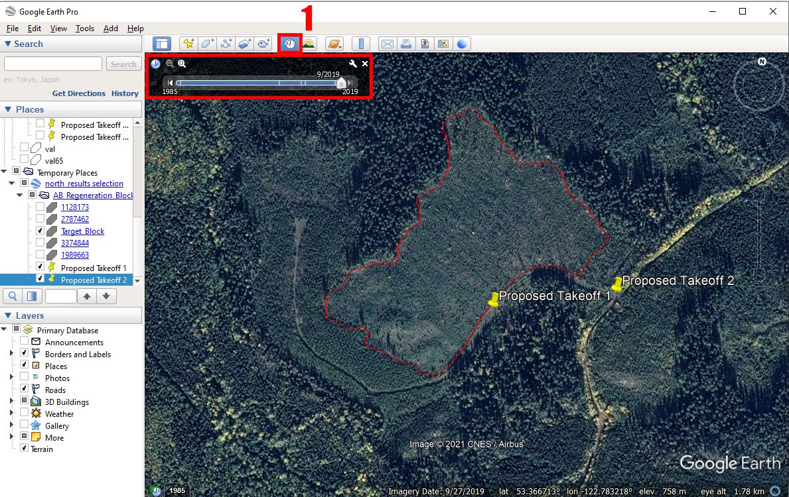

Chapter 4 Acquisition Planning
When planning RPAS acquisitions on harvest openings, operators must plan for additional risks, beyond what is typical of forest field work. Important considerations include takeoff and landing sites, line-of-sight, flight obstacles, inclement weather, and terrain.
4.1 Takeoff Sites
Before leaving the office, it is important to consult the most up to date imagery and inventory data to determine potential takeoff sites for your acquisition. Shapefiles for the site of interest can be converted to a .kml format and easily loaded into Google Earth (Figure 3). We recommend working with other layers such as roadways, powerline infrastructure, canopy height models, and elevation models to optimize your site planning efforts (Table 2).
When planning takeoff sites via Google Earth, consider the age of satellite imagery, which can be determined with the historical timeline button (Figure 3). By adjusting the time slider, one may be able to see years with clear images where pullouts and potential takeoff sites are more visible. Keep in mind that older imagery will be less reliable as regrowth and erosion occurs on deactivated roads. Proposed takeoff locations can be saved with pins which can be exported as KMLs for use in your geographic information system (GIS) mapping software of choice. When you arrive on site, perform a reconnaissance of the potential takeoff sites and select the most appropriate based on flight considerations (Table 2).
Table: Table 2. Site planning considerations for determining appropriate takeoff points and best practices for conducting active flights.
| Site Planning Considerations | Description | Managing the Risk | Data Sources |
|---|---|---|---|
| Nearby Roadway Infrastructure | Keep in mind active traffic on roads; roadways must be kept clear, dust from traffic can damage equipment or impact line-of-site. | Have at least one radio tuned to the nearest road channel to anticipate incoming traffic. Communicate with local operators beforehand to identify industrial activity in the area. Choose takeoff sites located away from active roadways when possible. | Alberta Provincial roads database (Information and Data Provisioning Services, Informatics Branch, Corporate Services Division, Alberta Environment and Sustainable Resource Development, Government of Alberta 2022) Local operators Alberta Road Channels (Government of Canada 2018) |
| Maintaining Line-of-site | Select the takeoff site where you and your team will have the best view of the RPA while it is in-flight. | Choose take-off sites clear of tall vegetation and ideally located on elevated positions with a good view of the block. Deploy team members equipped radios to elevated/clear positions to maintain visual line of sight. | Google Earth, Canopy Height models, Digital Elevation models |
| Obstacles | Be mindful of obstacles such as trees and powerlines which may contact the RPA; particularly during a flyaway event | Identify hazards when generating flight plans and ensure the path of the RPA does not intersect. Do not rely on built-in obstacle avoidance, actively watch the system and video transmission while being ready to take control of the aircraft at any point. Make sure to set return to home height to a height that will allow the RPA to clear obstacles before returning home |
Google Earth, Canopy Height models, Digital Elevation models, provincial infrastructure (powerline) layers. |
| Changes in elevation | When deploying the RPAS, be mindful of changes in ground elevation across the survey area. It is always best to take off from the highest point and allow the system to work downhill. | Some RPAS are equipped with terrain following software; this function is essential when working on sites with significant slope to both maintain consistent image acquisition conditions (aboveground altitude), and keep the RPA away from potential obstacles. Digital elevation models (dem) can be loaded into flight planning software to allow the RPA to adjust altitude accordingly. Provide the most accurate and highest spatial resolution DEM available. Any obstacles or terrain that is located between the RPA and controller will reduce/disrupt the signal strength. |
Digital elevation models: Alberta Provincial DEM (25m) (Alberta Environment and Parks, Government of Alberta 2017) Available LIDAR DEM (Ideal) |
Depending on the RPAS being used, the block boundary, and potential site KML files as well as digital elevation models (DEM) (.tif) can be easily copied to the memory card or controller and loaded into on-board flight planning software. It should be noted that DJI RPAS typically require that files use the WGS 1984 geographic coordinate system (i.e. latitude/longitude; WKID: 4326 Authority: EPSG); coordinate system conversion of vector and raster data can be done in most common GIS software (ArcMap (ESRI 2016), ArcGis Pro (ESRI 2022), QGIS (QGIS 2022)). In Canada, most spatial data are referenced to North American Datum 1983 original (NAD83 (original)), or North American Datum of 1983 of the Canadian Spatial Reference System (NAD83(CSRS)). For conversion between coordinate systems (e.g. NAD83 to WGS84), consult geographic transformation tables (e.g. ESRI (ESRI 2021)) to ensure that the proper geographic transformation is employed – this is especially important when high spatial accuracy is desired.
4.2 Flight Planning Software
There are various software packages available for automating RPAS acquisitions, including ODM (ODM 2020), Pix4D (Pix4D SA 2022), Drone Deploy (DroneDeploy 2022), Map Pilot (drones made easy) (Nex and Remondino 2014), and DJI GS Pro (DJI 2022). We almost exclusively use Map Pilot. Some of the software is free to use, but accessing all of the features necessary to carry out flights in the manner described above requires some kind of subscription or one time payment. Any of the software will allow the user to specify how high the RPA flies above ground and the level of overlap desired. Most flight planning software will also offer services which process RPAS data into orthomosaics and DAP point clouds. In general, we recommend that users process their own data, which will almost always result in higher quality outputs and reduce costs. When choosing a flight software, the user should ensure that the RPA is supported by the software. Most DJI RPA that allow the user to control the drone with a tablet can be flown by any software, but there is typically a delay between new RPA being released and their incorporation with flight planning software. When choosing a software package, it is important to pick one that includes some kind of terrain following feature, ideally one that allows the user to upload a user defined DEM. If the user does not own high quality DEMs, any software that allows for terrain following should have an option to allow the user to download a coarse resolution DEM.
As we are most familiar with Map Pilot, we will describe a basic workflow for planning and carrying out automated flights using this software. Map Pilot is proprietary and requires a subscription purchased from their website. We recommend subscribing to Map Pilot Pro. Once the account is set up, the user can download and login to the software on any tablet (we use iPads). Make sure to plan your flights before going into the field, as a data connection is required to download all of the necessary files.
Flight planning with Map Pilot:- Locate the Settings menu
- Select the RPA from the Flight Camera Model field
- Return to the main screen
- Click Create New Flight
- Navigate to where the flight will take place using the provided satellite imagery
- Double tap a location to set the takeoff point
- Tap and hold three more spots to complete the flight path polygon
Once the polygon has been created, vertices may be added and adjusted to ensure that the area of interest is within the polygon. We recommend making the polygon slightly larger than necessary to make sure that areas near the polygon’s boundaries are suitably covered. Flight polygons may also be made in advance. In this case, KML files can be sent to the tablet by email. However, it may be desirable to modify flight polygons in field following reconnaissance of the acquisition site.
After your polygon is created, tap the drop down menu on the top of the screen to set your mission type, altitude, and overlap. We recommend 90% forward and 85% lateral overlap for the generation of high quality DAP point clouds. If only orthomosaics are required, 80% forward and 80% lateral overlap will suffice. For most flights, a normal mission type is suitable, but for higher quality, you can set the mission type to grid, which will essentially have the drone fly the acquisition area twice using perpendicular flight patterns. Once all of these parameters have been set, click the tab on the lower left of the screen to open the terrain awareness function. Click the top of this menu to load in the DEM. After everything has been set, click the save icon on the top left of the screen to save your mission. This is essential to do as it also downloads the imagery and DEM so you can use these data offline when you are in the field. As long as everything has been downloaded, you will then be able to adjust all of these flight parameters in the field before you collect your data. To actually fly your saved mission, you only need to connect the drone to the tablet, open the software, and select your mission. The software should recognize the drone as being connected, allowing you to click “take off”, which should launch the drone and cause it to follow the preset flight path. When the battery is running low, it should return to home on its own. The drone should be able to land itself, but we recommend pausing the flight and landing the drone manually. Once the battery has been changed, you can select “take off” again, and the drone will return to its last waypoint to continue the mission. For more details, numerous tutorials that can be found here.
4.3 Timing
With regard to weather conditions, overcast skies reduce the effects of intense brightness and are therefore ideal. However, consistent weather throughout each acquisition is the most important factor with regard to illumination conditions. Attention should be paid to sun position. Acquiring data when the sun is at its highest point minimizes issues related to shadow and occlusion. Planning for illumination conditions is important. Tools such as SunCalc (Agafonkin 2018) can help prepare for optimized flight times and conditions.
Additionally, seasonality and the phenological state of target vegetation should be considered. Imagery captured in the early Spring, after snow-melt, but prior to deciduous green-up (leaf-off conditions), is especially useful for differentiating deciduous and coniferous species. Under these conditions, coniferous species are likely to be the only green objects in the captured imagery. Leaf-off deciduous individuals will however be difficult to discern in imagery. Leaf-off conditions may be helpful for developing DEM during photogrammetric processing (Section 5.0) as the absence of foliage may provide more ground points. There is however, also a possibility that leafless deciduous structures may impair depth map production (discussed in Photogrammetric Processing), which could lead to terrain being erroneously raised in places. Finally, while the effect of snow is relatively uncertain, photogrammetric software may be confused when snow occurs in tree crowns and on the ground.